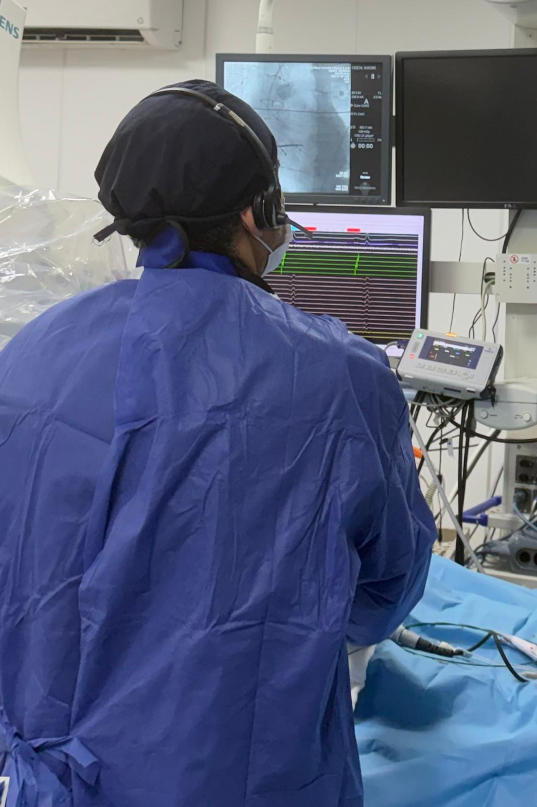

Hasta bilgilendirme · Ritim sağlığı
Elektrofizyolojik Çalışma (EFÇ) Nedir?
Elektrofizyolojik çalışma, kalbin elektriksel sisteminin incelendiği bir işlemdir. Kalp ritim bozukluklarının (çarpıntı, çok hızlı veya çok yavaş kalp atışı, bayılma gibi şikâyetlerin) nedenini bulmak için yapılır.

Nasıl yapılır?
- İşlem, ritim bozukluğu konusunda tecrübeli bir elektrofizyoloji uzmanı tarafından EFÇ laboratuvarında yapılır.
- Genellikle kasıktaki bir toplardamardan, ince ve esnek kateterler kalbe ilerletilir.
- Bu kateterler kalbin elektriksel sinyallerini kaydeder ve gerektiğinde ritim bozukluğunu test amacıyla tetikler.
- İşlem lokal anestezi ile yapılır. Gerekirse hafif sedasyon uygulanabilir.
- Süresi çoğunlukla 30 dakika ile 1 saat arasındadır; hastaya ve işlemin kapsamına göre değişebilir.
Neden yapılır?
- Ritim bozukluğunun kaynağını ve türünü belirlemek
- Bayılma nedenini araştırmak
- Aynı seansta gerekirse tedavi (ablasyon) uygulamak
- Uygun hastalarda kalp pili veya ICD ihtiyacının değerlendirilmesine yardımcı olmak
İşlemden önce
- Genellikle 6–8 saat aç kalmanız istenir; kesin süreyi sağlık ekibiniz bildirir.
- Kullandığınız ilaçları mutlaka doktorunuza bildirin. Bazı ilaçların işlem öncesinde düzenlenmesi gerekebilir; doktorunuz önermedikçe ilaçlarınızı kesmeyin.
İşlemden sonra
- Girişim bölgesinde birkaç saat yatak istirahati gerekir.
- Çoğu hasta aynı gün veya ertesi gün taburcu olur.
- Kanama, şişlik veya ateş olursa sağlık ekibinize başvurun; şiddetli göğüs ağrısı veya ciddi kanamada acil yardım alın.
Riskler
Ciddi komplikasyonlar nadirdir. Girişim yerinde morarma veya kanama, enfeksiyon ve çok nadiren kalpte hasar görülebilir. Doktorunuz sizin için özel riskleri anlatacaktır.